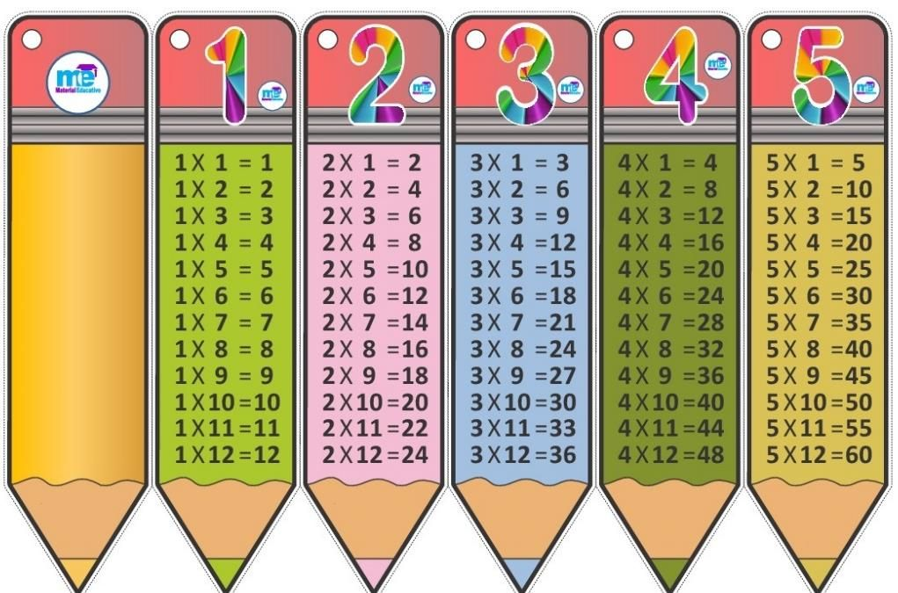

Aquí se encuentran recursos adicionales en los que se apoya el tema para un mejor desarrollo y compresión.
Se deben tener conocimientos previos acerca de las tablas de multiplicar para poder llevar a cabo el proceso de la
divición.
NOTA: Practicar las tablas de multiplicar
Aquì podras comporbar si la multiplicacion que hisiste es correcta
Calculadora
X
TABLAS DEL 1 AL 5

TABLAS DEL 6 AL 11
El video a continuación muestra una explicacion breve y clara de como realizar multiplicaciones de 1, 2 y 3 cifras, ya
que para realizar divisiones es muy importante aprender a multiplicar.
VIDEO ALUCIVO A LA RELALIZACIÓN DE MULTIPLICACIÓN DE 1, 2, y 3 CIFRAS
NOTA:Apartir de la explicación de realización de la multiplicación de una, dos y tres cifras, con las demás
cifras (4,5,6,...) el procedimiento es similar para
las demás multiplicaciones.